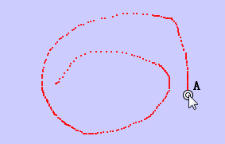

A point can leave a trace on the screen when they are moved.
First, select a point; then, move the point either manually or use the action: Animation. In this way, the locus of the point will be constructed.
To stop tracing, just right click the point and select the action "Stop Trace" to stop tracing.
\
JGEX Help